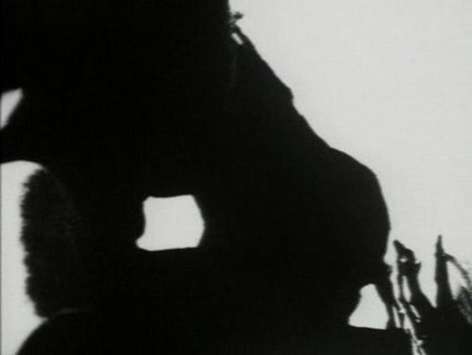
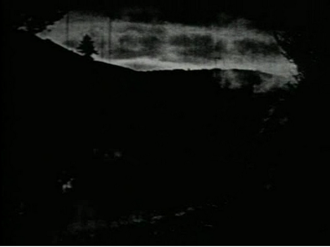
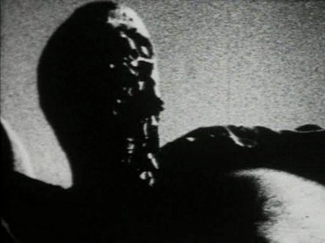
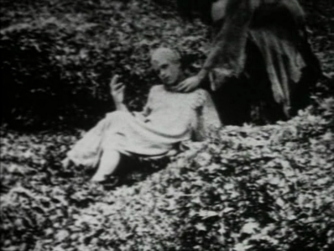

Gary J Shipley

Time of killing off surplus

His diet has not seen light or colour.
The proteins born inside a hospice suite.
And another failed attempt to settle back into the dimensions of rooms-in-general.
They take it from him.
They crap out toenails and eyelashes, make craven effigies of weather.
I chew on the landscapes in my ears.
The afterbirth of a cadaver.
Scar tissue in my incubator.
The walls are changing colour: the old green, the white before that…
His mouth is this cunt.
His teeth, shrapnel from exploded babies.
My hair inscribed with negative airflow.
His offspring, organs made of tar.
A waxwork human fruit.
I’ve acquired the posture of a slug.
The cloth stuffed in place of the air in there.
The tongue a rag in a petrol bomb.
I feel reasons suiciding in newly isolated swarms.
When the rock is a cloud I scoured off my lung.
I breathe solids in my sleep.
It’s not me made meaningless by this series of emptying-outs, just always the other way round.
And the eyes going shut, the mouth going kissing up blood.
A starved gorilla puking swallows.
And my body an impersonation of all the other bodies I see.
Like pre-chewed chicken wings squirming in gangs in lost areas of the moon.
Thought of other planets videodromes my sitting watching. The inside surfacing the only surface left.
The door to my side filling up with maggots inside flies in the spiders in the webs in there.
And yet hands are bodiless, mucking out the mouth.
And retched organs form into the shape of a reservoir, simulated in phases of being formed that way.
Fake partitions dismantled, then reassembled in my blindsight.
Six boils festering on the face of God.
The distant drone of numerical frictions, fretted inertias, subtractions multiplying all by themselves, lost frequencies uncoiling the whine of the world.
I baptise my smiles as baby farts.
The son is my son.
Even if I have to cut him down the middle to make two.
There’s a sky outside this room coloured with holes and water.
All of them together: a human swatch burnt down past the fats.
Sick animals drunk on the vertigo of their pending disappearance.
And it’s possible I’ll ingest the witness in one.
When the contusion is still this moving thing.
Bodies fluent in their lassitude, the organism slowing to become unfixed.
I haven’t had an erection in a month.
This is my idea for a life.
That that sky is my sky now.
And away from the screen there are stage sets of rooms, kept inside other rooms, and eyes painted over the top of eyes.

The pack coming pissed and untoothed.
Civilisation was pleasant once, and a frenzy then of gums.
The tension will peak with falsified depictions of endless one-way migrations.
Lifted up, growing, gurgling the sun, this infant cattle boy.
When already it’s so: our ready acceptance of death just altitude sickness.
And the rate at which my material conditions remain the same has started to accelerate.
Life in here is all the many uncompleting circles in my ceiling.
The telescopic dead-ends of crudely opened light.
The screen removes the room, has it sit in its void both sides of the door.
And one more abused boy is dragged to the summit to watch the sun burn out his eyes.
He’s florescent in the feedback of his being extinguished this way.
Because I cough the thoughts out pre-numbed and half-digested.
When the fire is just one more heatless flicker of white repeated to suggest heat.
And the copying reveals what’s imperceptible, while the process fails its objects by allowing them to be seen.
In the same way I once suspected birds of substituting their organs for baby food.
Because they want me to believe that reasons are medieval innocuities.
That my reasons have moved on.
That they sit behind my seeing doing things.
Collaging some clot in dead hair and shed skin to prop my watching on.
The daily excavation made all puffy by my many electric self-resuscitations.
As if straining at the molecular level. Which is meaningless.
And so I decide they’re just five flightless birds that have found the sky inside a newborn boy imagining himself a newborn bird.
And the earth is not a nest.
I arrive here a thousand times a day.
I imagine that when lava cools it concludes. That there is peace in this concluding. That some one thing can truly end and then be done.
Date denoting transparencies

The scab roots, forgets the wound.
Imagines further, that displacement is no burden to it there.
And the room has lost its fur, chewed space into concrete like weeds drinking deserts.
And the congealed bird grows too heavy for the air.
And I’m consuming days for this zero.
Eating whole currencies into not coming back.
Into the augmented physics I impute to dressing in this cautious mauling.
There are no places left.
I get stuck on the purposed men I saw in Angola.
I grab for the baby’s swallowed tongue.
Reaching rendering visible the infinite, eye-gouging nowhere into all my dirty shapes.
And if it was to say something, what would it say?
When the top of his head is now missing.
When the absence of light is just the layered recordings of various other absences of light. And all darknesses are made that way.
But then I’ve passed off too much of this with the occludent terminology of illness, an illness, in many forms, I’ve inherited as being somehow separable from life.
As with the lunging of an instrument made for making holes.
Each visible turn going side by side.
Into my irreversible spin.
White strings of light trailing from his upturned face.
Our human future depicted as an upside-down head: a mouth where the brain should be. Insides made gooey into outsides.
To be as I am, as it’s somehow proved I am – that is, caged in a skull – I’d have to stop thinking. While still thinking.
His outstretched hand a flail, a deflighted bird.
When horror becomes its own nostalgia, and there’s this death called irony to take its place.
And I think I’m confusing the future tense with disguising this convulsion.
When I sense bits of him coming off.
The stillborn man woken with a hail of bullets.
But I might get away in the grease of it, arranged into montage too slickly, all kinds of every kind of brain-death.
Its softnesses coming out.
And through. And through these extrusions and excretions materialize the impossibility of ever returning to nothing.
The walls ghosting, ghosted by other walls.
By his fireworked face.
And the forced stare of the actress, with a cock down her throat.
To look to an enclosure for proof of what surrounds it.

I watch signatures scrawled in placenta.
I want to fold myself up in a Scavenger’s Daughter.
It comes to something to be polluted with sips.
With a putrescent octopus leg.
The rotten limb held together with my kisses.
Me: the u-bend of a life.
The fires smutless from the earthbound.
The walls signifying the samey otherness they hide, floors perpetrating lies.
And every day I have to convince myself of this obviousness. And it should get easier. When it gets harder. And by the time I die I won’t notice my dying.
The fantasy of a sky over this.
The vanity of returning to anything.
Down below every atom in the planet, I make it up as I go along.
Jungle pollutants sucked of vitamined light.
Chronic sweat of the living-dead unborn as emerging territory.
Remembering lines I wrote, once and now again, about Russian filmmaker Yevgeny Yufit: “the viruses of memory wear beards drawn in blood / screaming chimp nostalgia at amplified angles”. And those are the words that come.
And a heliosphere drops to the sound of my castrated thrills.
As violence was replaced by noise, the screwworm recognised the mouth as a wound.
The windows affecting a glow behind the blinds’ closed seams.
A leper’s fumbled cross-less crucifixion.
The body becoming a curious ritual of the brain, its self-deception a tautology, a pleonasm, a human fetus crushed inside an egg.
I have nowhere set aside to retrieve my unwatched turns.
The zombie regurgitates his own almost man-sized meal.
The turd-fest of bodies needing to live, and having lived, and that’s our clinamen.
I’m the fixed part of the trap.
A sunburst eyelid moving cloud.
The exploded haecceity of a hollowed-out mirror.
I see through my hands to the floor.
The way a pig’s eye is levered from its face.
The analogy rooted in the anus of a bat.
That my hygiene has tailed off is almost legible now.
And the light retreats inside.
And the head won’t sink.
And though fear is toothless, there’s still this dread of the suck of its open kiss.
Low fog round the feet of broken down performers.
There’s no confusion in my dumb animals, only the oblivion of this intellect that squirts.
I imagine peepholes in my skull, and the type of people that would bother to look.
: : : : :
GARY J SHIPLEY is the author of various books, including the forthcoming Gumma Homo (Blue Square), Dreams of Amputation (Copeland Valley), The Death of Conrad Unger (Punctum / Dead Letter Office), Crypt(o)spasm (Punctum) and Theoretical Animals (BlazeVOX). He has published in Gargoyle, The Black Herald, Glossator, elimae, nthposition, 3:AM, and others. More details can be found at Thek Prosthetics.